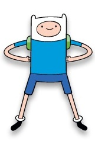
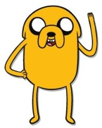
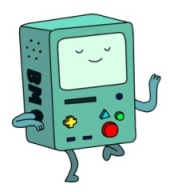
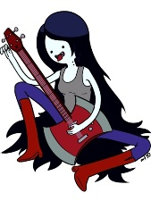
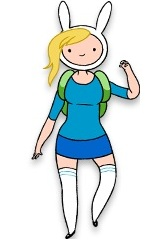

Finn

El protagonista de Hora de Aventuras es este chico desgarbado de trece años, inquieto, alegre, valiente y decidido. Posee un gran sentido de la justicia y la responsabilidad y tiene una resistencia y una vitalidad sobrehumanas. Su meta en la vida es convertirse en un gran héroe, salvar princesas, combatir a los malos, defender a los débiles y salvar la Tierra de Ooo de cualquier tipo de amenaza. Por otro lado, es muy sincero y un poco inocente y le cuesta expresar de forma natural sus sentimientos, sobre todo, con las chicas. Perpetuamente vestido con un gorro blanco con pequeñas orejas, camiseta y pantalones azules cortos, y una mochila verde a la espalda. El que podría ser el último humano de la Tierra de Ooo fue abandonado en el bosque siendo un bebé siendo adoptado posteriormente por Margaret y Joshua, los padres de Jake, y creciendo junto a este último y su hermano Jermaine.
Jake

Hermano adoptivo y colega de aventuras de Finn el Humano. Es un perro amarillo de unos veintisiete años de edad con poderes mágicos, según él mismo obtenidos al revolcarse en una charca de barro siendo un cachorro, los cuales le permiten estirar, contraer y modificar su cuerpo a voluntad siendo sus límites totalmente desconocidos. La confianza en sus poderes mágicos, los cuales siempre le sirven para escapar de cualquier peligro, han hecho de Jake una persona excesivamente tranquila, serena y, en ocasiones, alarmantemente despreocupada. Es irresponsable, perezoso y le cuesta centrarse pero tiene un gran corazón. También le gusta gastar bromas, tocar la viola, cantar y comer helado. Es el novio formal de Lady Arcoiris.
BMO

Es un dispositivo tecnológico autónomo e inteligente, amigo de Finn y Jake, de color verde aguamarina, con varios botones y pantalla similares a los de una consola portátil aunque con algunos rasgos propiamente humanos. En la mayoría de ocasiones sirve como máquina recreativa para sus amigos, con un amplio catálogo de videojuegos inspirados en los años ochenta, pero las capacidades de este pequeño ordenador con vida propia van mucho más allá teniendo incorporadas funciones de cámara fotográfica y de video, impresora, despertador, proyector de películas o reproductor musical. Es de carácter responsable y suele expresar sus emociones en el visor de su pantalla.
Marcelin

La Reina de los Vampiros, con más de mil años de edad aunque por apariencia no pasa de la veintena, e hija de Hunson Abadeer el soberano de la dimensión demoniaca de la Nocheosfera. Es alta y delgada, tiene la piel de color azul grisáceo, cabello oscuro y suele ir cargada con su bajo-hacha con el que compone y toca sus propias canciones. No tiene necesidad de beber sangre para sobrevivir, sólo absorber el color rojo, y tiene poderes de levitación y telequinesis. También puede transformarse en otras criaturas, como lobos o murciélagos, y le daña la luz del sol, las estacas y el ajo. Tiene una personalidad aventurera, extrovertida y bromista. Es una buena amiga de Finn y Jake, antigua conocida del Rey Hielo que le regaló su osito Hambo y mantiene una relación algo tensa y áspera con la Princesa Chicle.
Fiona

Es la contrapartida femenina de Finn el Humano en la Tierra de Aaa, tiene catorce años y al igual que su homólogo es una aventurera nata de carácter vivo y alegre aunque más reflexiva y madura emocionalmente. Tiene un sombrero similar al de Finn aunque las orejas son más largas y un mechón rubio de pelo le sobresale de él, viste camiseta azul, falda corta a juego, calcetines hasta las rodillas y mochila a la espalda. Fionna es una chica valiente, le gustan las emociones fuertes pero también tiene un lado muy sensible, y debido a esa mezcla hace buenas migas con sus compañeros Cake o Marshall Lee. Por otro lado, es capaz de conservar la calma en las situaciones peliagudas aunque también se puede dejar llevar fácilmente por su rabia. En esta realidad el Príncipe Chicle es el interés romántico de Fionna, el cual tampoco parece estar por ella, aunque también parece sentir algo por Marshall Lee.
El Linch

El verdadero villano de la serie y también el más poderoso. Fue combatido y derrotado en el pasado por Billy el Guerrero, uno de los más grandes héroes de la Tierra de Ooo, y encerrado en una prisión de ámbar custodiada por la Princesa Chicle de la cual escapó controlando la mente de un caracol. Este es uno de los grandes poderes del Lich, su capacidad para controlar mentalmente e hipnotizar a cualquier ser vivo, motivo por el cual Finn y Jake deben combatirlo portando joyas mágicas que les protegen contra ello. La única motivación del este rey zombi parece ser el mal por el mal y la pura y llana destrucción de la Tierra de Ooo. En realidad, más que una entidad concreta, el Lich es un estado y por ello es capaz de contaminar, convertir y poseer a todo ser vivo con el que entra en contacto. Su origen se remonta a la Guerra de los Champiñones aunque no se conocen muchos más datos al respecto.